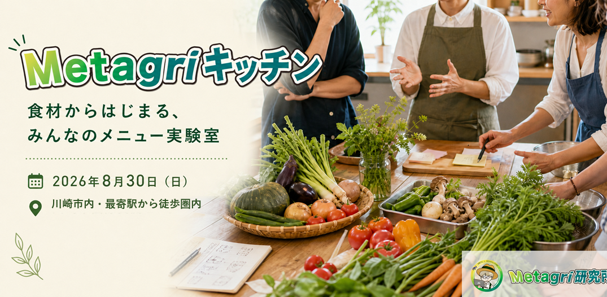

カフェが好きな方
コーヒーやフードペアリング、店員との会話、居心地のよい時間を楽しみたい方。
2026年8月4日更新 / 企画・運営体制を再設計中
日程を優先して実施するのではなく、安心して継続できる企画へ立て直すため、開催日・会場・提供内容をあらためて設計します。これまでの支援実績は記録として残し、新規支援の受付は再始動まで停止します。

大切なお知らせ
2026年9月27日に予定していた1DAYカフェは延期します。新しい開催日は、企画責任者・飲食運営体制・会場・安全条件を整えた後にご案内します。
掲載日: 2026年8月4日
既存の支援実績は削除せず、入金確認済みの記録として保持します。現在、新規支援は受け付けていません。
知る機会が、食の景色を変える。
カフェMetagriは、農業とテクノロジーのコミュニティ「Metagri研究所」で活動するインターン生から生まれた、1日限定のカフェ実証企画です。
農家さんの食材に込められた想いや、食材が手元に届くまでの背景を、スープやドリンク、ストーリーPOP、会話を通じて感じられる場をつくります。知らなければ、ただの野菜かもしれない。でも背景を知ると、食の景色は少し変わります。
カフェ単体の売上がゴールではありません。来場をきっかけに、次の行動につながる循環を検証します。

お客様・支援者起点の体験設計

カフェMetagriは、ただ飲食を提供する場ではなく、店員との会話、食材の背景、農家さんの想い、同じ関心を持つ人との出会いが残る1DAYカフェを目指します。
コーヒーやフードペアリング、店員との会話、居心地のよい時間を楽しみたい方。
カフェを開きたい、企画を形にしたいと思いながら、行動のきっかけを探している方。
野菜、フードロス、作り手の背景、サステナブルな活動を少し深く知りたい方。
休憩の合間や休日に、気軽な会話や近所付き合いのような温かさを求めている方。
投稿を見て気になり、カフェ体験や農家さんのストーリーに触れてみたい方。
オンラインのつながりを、リアルな対話や共創のきっかけへ広げたい方。
常設カフェではなく、継続可能な1DAYカフェ実証として体制とコンセプトを再設計しています。
| 目標金額 | 150,000円 |
|---|---|
| 募集方式 | All-in方式目標金額に届かなかった場合も企画を実施し、リターンをお届けします。 |
| 受付状況 | 2026年8月4日から新規受付を一時停止再開日は未定です。 |
| 実施時期 | 未定2026年9月27日の予定を延期し、体制確定後に決定します。 |
| 開催場所 | 未定延期後の企画に合わせて再選定します。 |
| 形式 | 1DAYカフェ / 小規模ポップアップ常設カフェの開業ではなく、1日限定の実証企画です。 |
| 支援方法 | 新規受付を一時停止中再開時に支援方法とプランを改めてご案内します。 |
| 運営 | Metagri研究所 インターン生チーム食品衛生、会場契約、金銭管理、農家さんへの正式依頼は、Metagri研究所の運営側が責任を持って行います。 |
いただいた支援金は、単なる飲食代ではなく、農家さんと生活者をつなぐ実証企画への応援・参加費として活用します。最新の支出見込みをもとに、支援目標150,000円に合わせて各費目を目安金額として整理しています。
| 使途 | 目安 | 内容 |
|---|---|---|
| 食材費（試作費含む） | 30,000円 | 農家さんに無償提供を求めず、適正価格で食材を購入し、試作にも活用します。 |
| ドリンク費 | 10,000円 | 当日提供するドリンクや試飲準備に充てます。 |
| 備品 | 10,000円 | 提供・運営に必要な備品、消耗品等に充てます。 |
| 場所代 | 45,000円 | 1DAYカフェの会場利用費に充てます。 |
| 広報費 | 5,000円 | POP、メニュー表、農家紹介カード、SNS素材等の制作に使います。 |
| インターン生の活動費 | 50,000円 | 企画、準備、発信、振り返りなどの活動を支える費用です。 |
| 支援金充当合計 | 150,000円 | クラウドファンディングの目標金額と一致します。 |
既存支援者の方が申込時の内容を確認できるよう、プラン情報は記録として残しています。新しい開催日と提供内容が確定した後に再設計するため、現在はいずれのプランも新規申込みできません。
提供時期: 2026年10月予定
現地には行けないけれど、インターン生の挑戦を少し応援したい方へ。
提供時期: 2026年8月から10月予定 / 残り --
企画の裏側も楽しみながら応援したい方へ。
提供時期: 2026年9月27日（日）予定 / 残り --
このプランの中心は、本番カフェの体験とプロジェクトへの応援です。8月30日の体験キッチンは、ご都合が合う方が参加できる追加特典です。
提供時期: 2026年7月から10月予定 / 残り --
このプランは銀行振込での受付です。申込フォーム送信後、運営から振込先と期日をメールでご案内します。
企画会議や本番カフェを通じて、食と農の場づくりを一歩深く応援したい方へ。8月30日に参加できない場合も、企画への関わり方やほかのリターンは変わりません。
提供時期: 2026年9月から10月予定 / 1名限定の申し込みは完了しました。
すでに農家さんからご支援をいただいている限定枠です。追加募集は行っていません。
農家さんの食材や想いを、カフェ体験の中で来場者に届けるための協賛枠です。広告効果や集客数を保証するものではありません。掲載名・掲載内容は事前に確認し、企画趣旨に沿う形で調整します。
提供時期: 2026年9月から10月予定 / 残り --
このプランは銀行振込での受付です。申込フォーム送信後、運営から振込先と期日をメールでご案内します。
学生の挑戦や食育活動を応援したい教育関係者、教員、地域の大人応援者向けの協賛枠です。広告効果や集客数を保証するものではありません。掲載名は事前に確認し、公序良俗や企画趣旨に合わない場合は掲載を相談・見送りとさせていただくことがあります。
どのプランでも、支援は未完成の企画を一緒に育てる参加のかたちです。

ショート動画で見る
農家さんの食材をきっかけに、みんなでアイデアを出し、つくって、味わう。体験キッチンのイメージを短い動画でご覧いただけます。
対象は6,000円・10,000円プランのみ
「カフェ参加プラン」と「共創参加プラン」に付く共通の追加特典です。農家さんの食材を囲み、参加者同士で未来のカフェメニューを考えて共同調理する、3時間のメニュー実験です。ここで生まれたアイデアを、延期後のカフェ企画へつなげていきます。
8月30日の体験キッチンは予定どおり実施します。既存の6,000円・10,000円支援者に含まれる無料参加権も有効です。延期後の1DAYカフェに関するリターンは、個別に振替のご意向を確認します。
新規受付は停止しています。すでにお申込み・ご入金いただいた方には、運営から個別にご連絡します。
9月27日の開催延期と、8月30日の体験キッチン継続についてご確認ください。
元の支援プラン、入金、提供済み・未提供の特典を照合したうえで、運営からご連絡します。
延期後の企画への振替をご確認いただき、返金をご希望の場合は個別に対応します。
新しい体制・開催日・提供内容が決まり次第、既存支援者の方へ先にご案内します。
開催日だけを変更するのではなく、企画責任者、飲食運営体制、会場、安全条件、リターンの提供責任をあらためて整えます。
既存支援は有効な記録として保持し、振替の同意を個別に確認します。返金をご希望の場合も個別に対応します。
申込時の条件と今回の追記は、販売規約でご確認いただけます。
運営について
Metagri研究所は、「農業の常識を超越する」を合言葉に、農業とAI・web3などの新しい仕組みづくりに挑戦しているコミュニティです。カフェMetagriは、そこで活動するインターン生の発案から始まりました。
メンバーそれぞれが、発信、メニュー考案、農家さんのストーリー整理、当日の体験設計、資金集めを手探りで進めています。最初から完成されたお店をつくるわけではありません。失敗や改善も含めて、農家さん・支援者の皆さん・コミュニティと一緒に育てていくプロジェクトです。
連携する農家さんとインターンメンバーの紹介は、確定次第このページと活動報告でお届けします。
現在はすべての新規支援受付を一時停止しています。再開時は、新しい開催日とプラン内容をこのページでご案内します。
現在はプランを選択できません。掲載中のプランは受付停止時点の記録です。再始動時に内容と提供時期を見直してご案内します。
食材費（試作費含む）、ドリンク費、備品、場所代、広報費、インターン生の活動費に活用します。各費目は最新の支出見込みをもとにした目安金額です。
延期後の開催日・会場は未定です。運営体制と安全条件を整えた後、既存支援者の方へ先にご案内します。
本番カフェ・体験キッチンに参加する方には、事前にアレルギー情報を確認します。安全に提供できない場合は、内容の一部変更や代替対応をご相談させていただくことがあります。
3,000円以上の支援者向けに、公式サイトのパスワード付き限定ページとMetagri研究所のDiscordで公開します。月2〜3回の更新を予定し、閲覧方法は支援後にご案内します。
掲載は希望者のみです。3,000円以上のプランで、カフェMetagriの公式サイトへの応援コメント掲載を選べます。
共創参加は、Metagri研究所のDiscordをメインに進めます。参加後は公式Discordに入り、農家さん・支援者・運営がつながる場として、企画会議や裏側レポートの閲覧、体験キッチンの参加案内をご確認ください。
はい。公式Discordリンクからアカウント作成・参加ができます。参加後は案内に沿ってチャンネルを確認してください。操作に不安がある場合は、申込後の案内に返信してご相談ください。
企画会議は意見交換・壁打ちの場です。ご意見は参考にしますが、食品衛生、安全管理、運営上の理由から、最終判断は運営側で行います。
問題ありません。既存のカフェ参加プラン・共創参加プランに付く希望者向けの追加特典です。参加できない場合も、延期後の企画への振替または返金について個別にご案内します。
現在は新規の申込み・入金案内を停止しています。既存支援に関する領収書や返金のご相談は、運営からの個別案内にご返信ください。
2026年9月27日の開催は延期しました。既存支援者の方には、延期後への振替または返金について個別にご案内します。
新しい体制・コンセプト・開催日・提供内容が決まり次第、このサイトであらためてお知らせします。